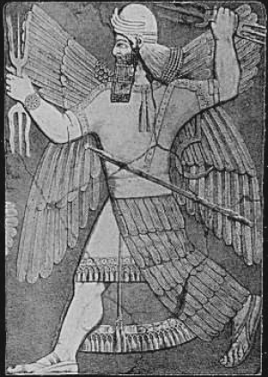
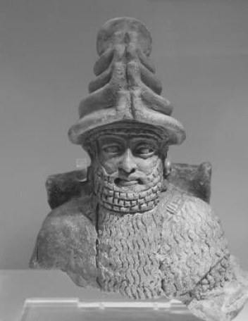
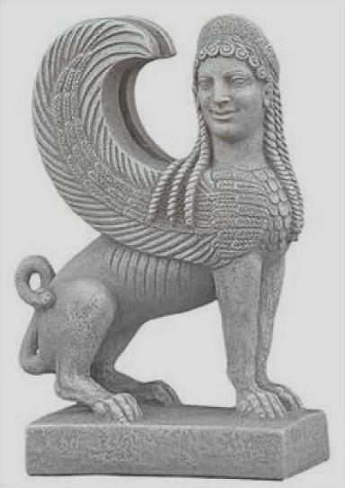
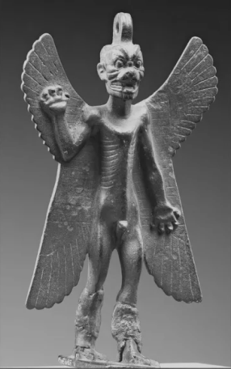

How the needs of each social level shape which gods are worshipped
Centralized state religion
The Assyrian army's goddess. The only female war god in the pantheon. Kings claimed she appeared to them before battle - armored, carrying a bow. When the Assyrian empire fell, she vanished with it.
Worshipped for 3,600 years across 8 civilizations - longer and wider than any other god in the pantheon. She descended into the underworld, died, and came back. The price of her return: her own husband.
The oldest and most destructive war god. When humanity became too noisy, he sent a great flood. Every Mesopotamian king needed his blessing. Every city feared his anger.

The only deified human king in the pantheon. His son declared him a god after his death to legitimize his own rule. Invented for political convenience, forgotten almost immediately - a mortal among immortals.
Local civic worship
The goddess of beer. She didn't just bless the harvest - she invented brewing. The oldest beer recipe in history is written as a hymn to her.
Inanna's husband. Dragged to the underworld by demons while sitting on his throne. Women across Mesopotamia mourned him every year for 3,000 years.

Family based rituals

The winged bull with a human face. Placed at the gates of palaces and homes. She didn't fight evil - she absorbed it. Every bad spirit that entered had to pass through her first.
The only death god worshipped in the home. A demon kept at the front door - four wings, a scorpion tail, a rotting face. His ugliness was the point. You invited the monster in to protect your children.

Cultural prominence
God’s domain
Gender
Low
High
War
Creation
Justice
Wisdom
Death
Fertility
Female
Male